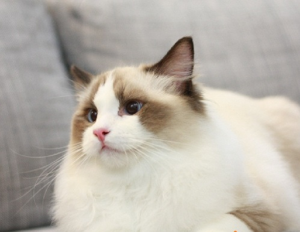

布偶貓
布偶貓是人工培育的貓種，確切來源可追溯到1960年代的加州，Ann Baker的鄰居收留了她家附近一隻出了車禍的貓Josephine。
後來Josephine生了一窩貓，這些貓體型大且溫馴，Ann Baker非常喜歡，便開始培育這個品種。不過Ann Baker使用哪種貓跟Josephine來育種，穩定這個品種的基因，記載的都不盡相同且無可考，只知道自1965年在美國獲得認可後，已自成一血系。
早期的人們通常認為該貓對痛覺遲鈍，事實上大錯特錯。若有人撫摸時，布偶貓的身體會鬆弛，有如布偶一般，很能忍受孩子玩弄，是理想的家庭寵物。